| Run | Open-loop | Closed-loop | Comparison | Metrics |
|---|---|---|---|---|
| OIP_lineC-hq | skeleton | moderate | optimized | cl_prepass | s42 open_loop 2026-10-20 08:15 | 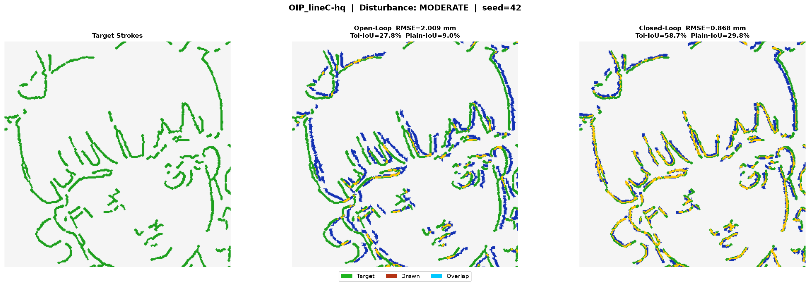 | RMSE 2.0086 mm Chamfer 0.7634 mm Tol-IoU 27.7938% | ||
| OIP_lineC-hq | skeleton | moderate | optimized | cl_prepass | s42 closed_loop_prepass 2026-10-20 08:15 | RMSE 0.8677 mm Chamfer 0.2421 mm Tol-IoU 58.6552% | |||
| 01_robot_arm_sketch-hq | canny | moderate | optimized | cl_prepass | s42 open_loop 2026-10-20 07:49 | 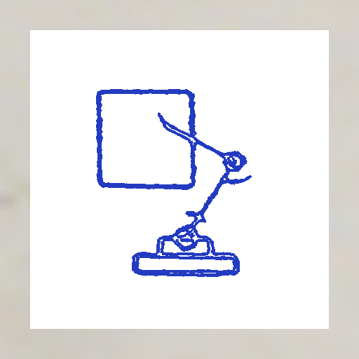 | 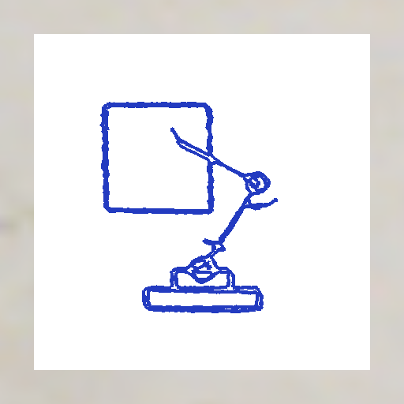 | 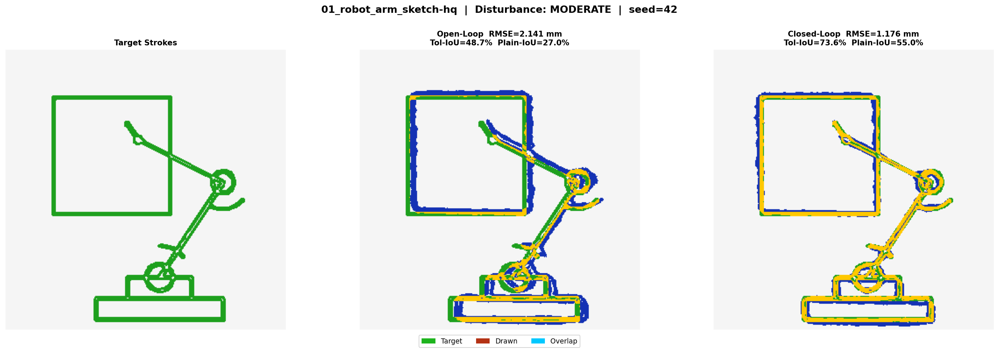 | RMSE 2.1413 mm Chamfer 0.4124 mm Tol-IoU 48.6944% |
| 01_robot_arm_sketch-hq | canny | moderate | optimized | cl_prepass | s42 closed_loop_prepass 2026-10-20 07:49 | RMSE 1.1756 mm Chamfer 0.116 mm Tol-IoU 73.5994% | |||
| 02_technical_gears-hq | skeleton | moderate | optimized | cl_prepass | s42 open_loop 2026-10-19 16:39 | 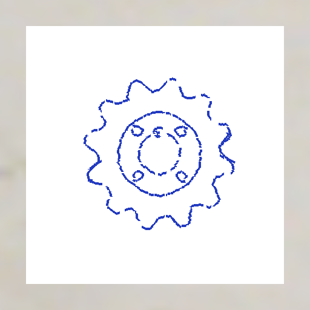 | 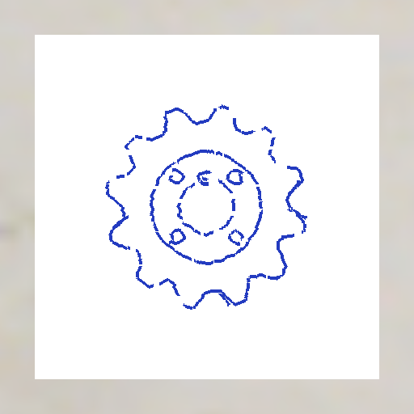 | 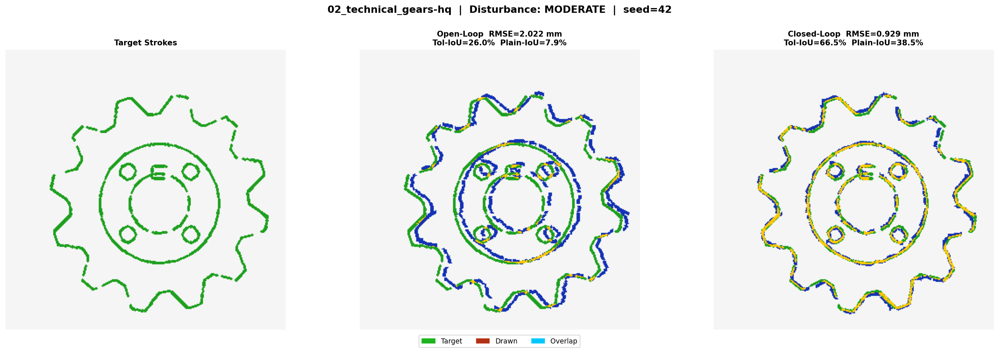 | RMSE 2.0222 mm Chamfer 0.7699 mm Tol-IoU 26.0164% |
| 02_technical_gears-hq | skeleton | moderate | optimized | cl_prepass | s42 closed_loop_prepass 2026-10-19 16:39 | RMSE 0.9292 mm Chamfer 0.1677 mm Tol-IoU 66.4714% | |||
| 03_natural_sketch-hq | skeleton | moderate | optimized | cl_prepass | s42 open_loop 2026-10-19 16:39 | 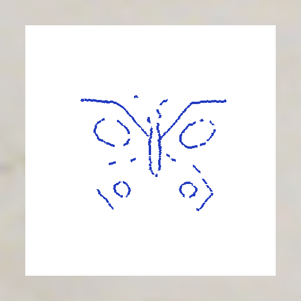 | 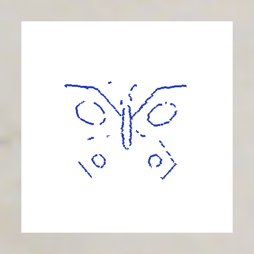 | 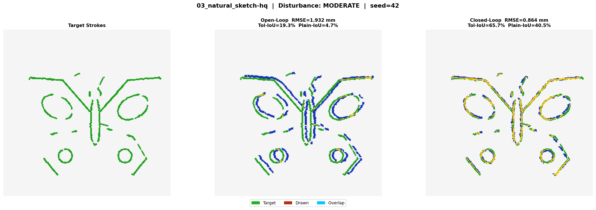 | RMSE 1.9319 mm Chamfer 0.948 mm Tol-IoU 19.3247% |
| 03_natural_sketch-hq | skeleton | moderate | optimized | cl_prepass | s42 closed_loop_prepass 2026-10-19 16:39 | RMSE 0.8639 mm Chamfer 0.1605 mm Tol-IoU 65.7129% | |||
| 04_complex_logo-hq | boundary | moderate | optimized | cl_prepass | s42 open_loop 2026-10-19 16:38 | 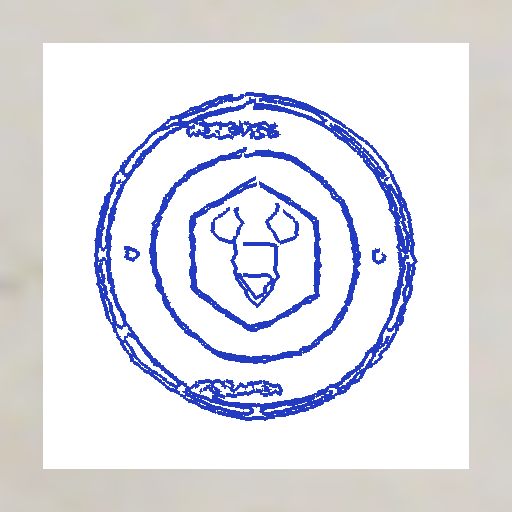 | 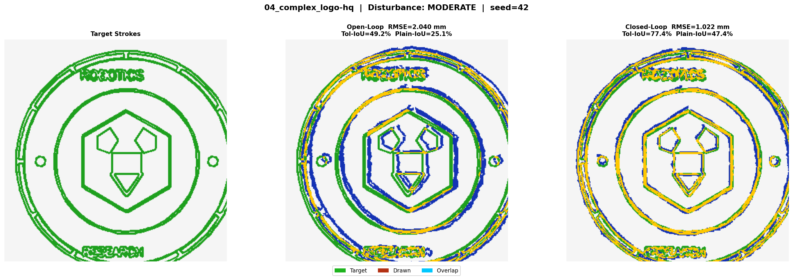 | RMSE 2.0397 mm Chamfer 0.4469 mm Tol-IoU 49.2199% | |
| 04_complex_logo-hq | boundary | moderate | optimized | cl_prepass | s42 closed_loop_prepass 2026-10-19 16:38 | RMSE 1.0217 mm Chamfer 0.1245 mm Tol-IoU 77.3995% | |||
| 01_robot_arm_sketch-hq | skeleton | moderate | optimized | cl_prepass | s42 open_loop 2026-10-19 16:35 | 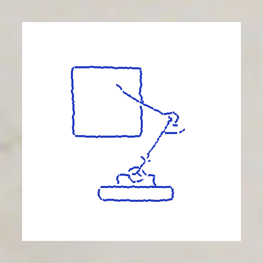 | 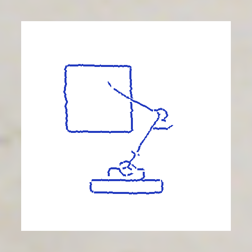 | 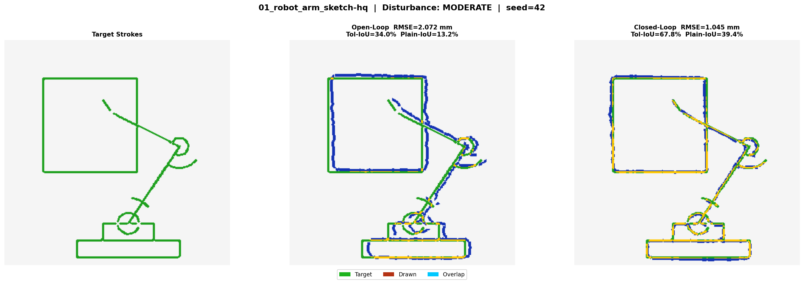 | RMSE 2.0718 mm Chamfer 0.6257 mm Tol-IoU 33.9756% |
| 01_robot_arm_sketch-hq | skeleton | moderate | optimized | cl_prepass | s42 closed_loop_prepass 2026-10-19 16:35 | RMSE 1.0449 mm Chamfer 0.1618 mm Tol-IoU 67.8274% | |||
| 01_robot_arm_sketch-hq | skeleton | none | optimized | open_loop | s42 open_loop 2026-10-19 14:55 | 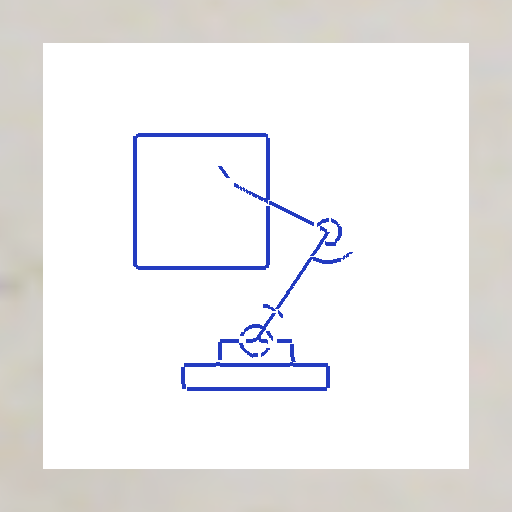 | 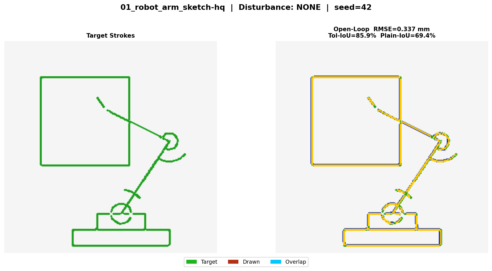 | RMSE 0.3371 mm Chamfer 0.0445 mm Tol-IoU 85.9196% | |
| 01_robot_arm_sketch | skeleton | moderate | optimized | cl_prepass | s42 open_loop 2026-10-19 11:06 | 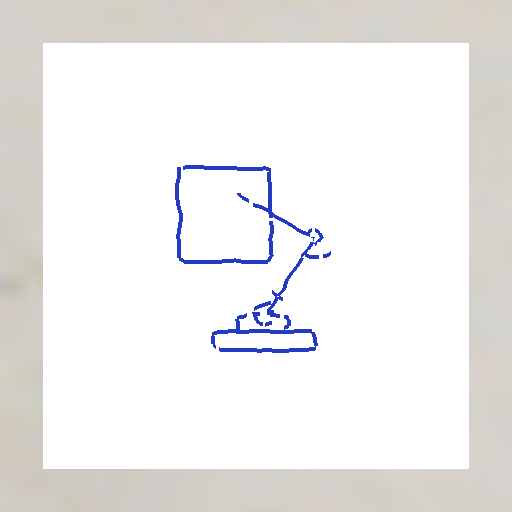 | 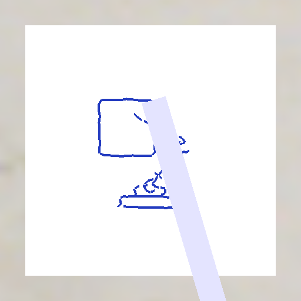 | 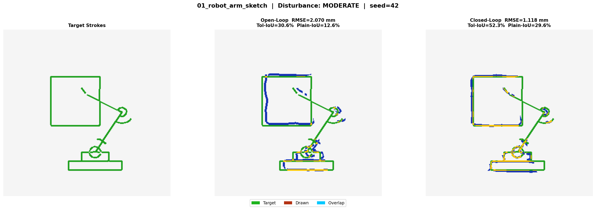 | RMSE 2.0703 mm Chamfer 0.6352 mm Tol-IoU 34.2198% |
| 01_robot_arm_sketch | skeleton | moderate | optimized | cl_prepass | s42 closed_loop_prepass 2026-10-19 11:06 | RMSE 1.1181 mm Chamfer 0.1752 mm Tol-IoU 66.8594% | |||
| 01_robot_arm_sketch | skeleton | none | optimized | open_loop | s42 open_loop 2026-10-19 08:09 | 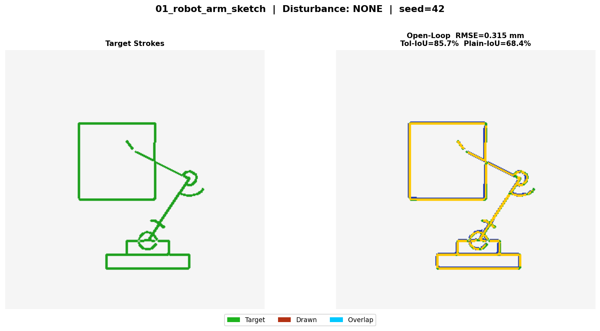 | RMSE 0.3152 mm Chamfer 0.0469 mm Tol-IoU 85.7235% | ||
| 01_robot_arm_sketch | skeleton | none | naive | open_loop | s42 open_loop 2026-10-19 08:08 | 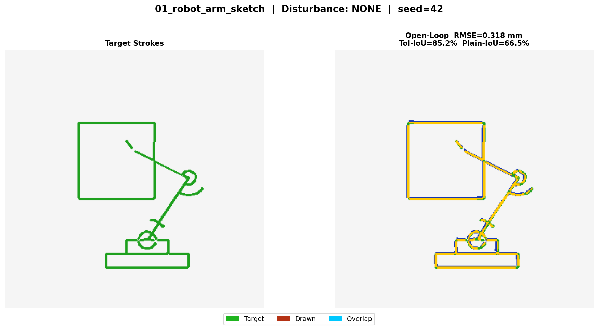 | RMSE 0.3177 mm Chamfer 0.0519 mm Tol-IoU 85.1823% |